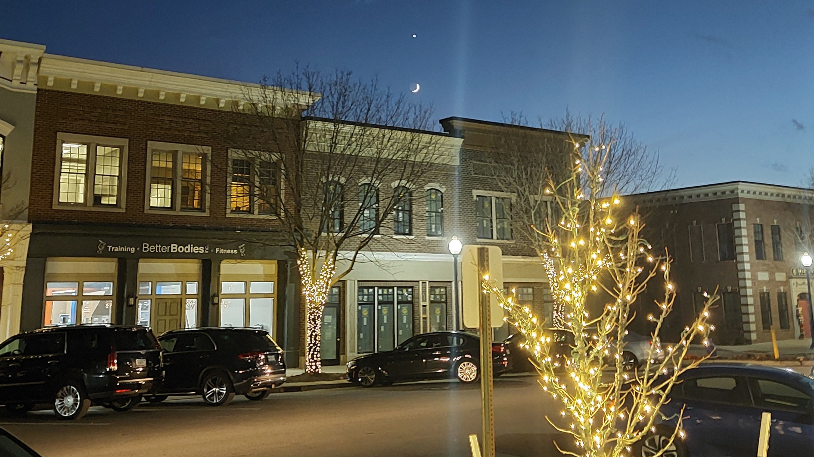

Getting Started
You just got your first camera, but what are all these buttons? What is a white balance and isn't aperature from Portal? This guide will give you a brief rundown of all the basic settings on your camera and how to take your first pictures.

Lighting
Are your pictures way too dark or way too bright? This key part of pictures is exposure and in this guide you will learn the basics of the Exposure Triangle and how to take well lit photos.

Composition
What makes a pretty picture? The main way photographers create interesting pictures is through composition, using ideas like the rule of thirds and leading lines. This guide will introduce you to using composition in your photos.